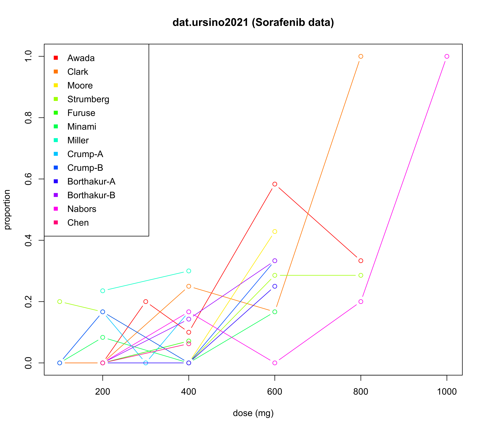

dat.ursino2021.Rd13 studies investigating the occurrence of dose limiting toxicities (DLTs) at different doses of Sorafenib.
dat.ursino2021The data frame contains the following columns:
| study | character | study label |
| year | integer | publication year |
| dose | numeric | dose (\(\mathrm{mg}\)) |
| events | integer | number of DLTs |
| total | integer | number of patients exposed |
Sorafenib (BAY 43-9006, Nexavar) is a kinase inhibitor that is used in the treatment of advanced renal cell carcinoma, hepatocellular carcinoma, and radioactive iodine resistant advanced thyroid carcinoma. Thirteen trials with published results, described in eleven manuscripts, were identified in a literature search. This dataset contains the doses investigated, the numbers of patients treated, and the number of dose-limiting toxicities (DLTs) observed. In general, each study investigated several doses according to some dose-escalation scheme.
Ursino, M., Roever, C., Zohar, S., & Friede T. (2021). Random-effects meta-analysis of phase I dose-finding studies using stochastic process priors. The Annals of Applied Statistics, 15(1), 174–193. https://doi.org/10.1214/20-AOAS1390
Roever, C., Ursino, M., Friede, T., & Zohar, S. (2022). A straighforward meta-analysis approach for oncology phase I dose-finding studies. Statistics in Medicine, 41(20), 3915–3940. https://doi.org/10.1002/sim.9484
European Medicines Agency (EMA) (2022). Nexavar (sorafenib) EPAR summary. https://www.ema.europa.eu/en/medicines/human/EPAR/nexavar
Awada, A., Hendlisz, A., Gil, T., et al. (2005). Phase I safety and pharmacokinetics of BAY 43-9006 administered for 21 days on / 7 days off in patients with advanced, refractory solid tumours. British Journal of Cancer, 92(10), 1855. https://doi.org/10.1038/sj.bjc.6602584
Clark, J. W., Eder, J. P., Ryan, D., Lathia, C., & Lenz, H.-J. (2005). Safety and pharmacokinetics of the dual action Raf kinase and vascular endothelial growth factor receptor inhibitor, BAY 43-9006, in patients with advanced, refractory solid tumors. Clinical Cancer Research, 11(15), 5472–5480. https://doi.org/10.1158/1078-0432.CCR-04-2658
Moore, M., Hirte, H. W., Siu, L., et al. (2005). Phase I study to determine the safety and pharmacokinetics of the novel Raf kinase and VEGFR inhibitor BAY 43-9006, administered for 28 days on / 7 days off in patients with advanced, refractory solid tumors. Annals of Oncology, 16(10), 1688–1694. https://doi.org/10.1093/annonc/mdi310
Strumberg, D., Richly, H., Hilger, R. A., et al. (2005). Phase I clinical and pharmacokinetic study of the novel Raf kinase and vascular endothelial growth factor receptor inhibitor BAY 43-9006 in patients with advanced refractory solid tumors. Journal of Clinical Oncology, 23(5), 965–972. https://doi.org/10.1200/JCO.2005.06.124
Furuse, J., Ishii, H., Nakachi, K., Suzuki, E., Shimizu, S., & Nakajima, K. (2008). Phase I study of sorafenib in Japanese patients with hepatocellular carcinoma. Cancer Science, 99(1), 159–165. https://doi.org/10.1111/j.1349-7006.2007.00648.x
Minami, H., Kawada, K., Ebi, H., et al. (2008). Phase I and pharmacokinetic study of sorafenib, an oral multikinase inhibitor, in Japanese patients with advanced refractory solid tumors. Cancer Science, 99(7), 1492–1498. https://doi.org/10.1111/j.1349-7006.2008.00837.x
Miller, A. A., Murry, D. J., Owzar, K., et al. (2009). Phase I and pharmacokinetic study of sorafenib in patients with hepatic or renal dysfunction: CALGB 60301. Journal of Clinical Oncology, 27(11), 1800. https://doi.org/10.1200/JCO.2008.20.0931
Crump, M., Hedley, D., Kamel-Reid, S., et al. (2010). A randomized phase I clinical and biologic study of two schedules of sorafenib in patients with myelodysplastic syndrome or acute myeloid leukemia: A NCIC (National Cancer Institute of Canada) Clinical Trials Group Study. Leukemia and Lymphoma, 51(2), 252–260. https://doi.org/10.3109/10428190903585286
Borthakur, G., Kantarjian, H., Ravandi, F., et al. (2011). Phase I study of sorafenib in patients with refractory or relapsed acute Leukemias. Haematologica, 96(1), 62–68. https://doi.org/10.3324/haematol.2010.030452
Nabors, L. B., Supko, J. G., Rosenfeld, M., et al. (2011). Phase I trial of sorafenib in patients with recurrent or progressive malignant glioma. Neuro-Oncology, 13(12), 1324–1330. https://doi.org/10.1093/neuonc/nor145
Chen, Y.-B., Li, S., Lane, A. A., et al. (2014). Phase I trial of maintenance sorafenib after allogeneic hematopoietic stem cell transplantation for FMS-like tyrosine kinase 3 internal tandem duplication acute myeloid leukemia. Biology of Blood and Marrow Transplantation, 20(12), 2042–2048. https://doi.org/10.1016/j.bbmt.2014.09.007
medicine, oncology, dose-response models
# load data
data("dat.ursino2021")
# show (some) data
head(dat.ursino2021, n=15)
#> study year dose events total
#> 1 Awada 2005 100 0 4
#> 2 Awada 2005 200 0 3
#> 3 Awada 2005 300 1 5
#> 4 Awada 2005 400 1 10
#> 5 Awada 2005 600 7 12
#> 6 Awada 2005 800 1 3
#> 7 Clark 2005 100 0 3
#> 8 Clark 2005 200 0 3
#> 9 Clark 2005 400 1 4
#> 10 Clark 2005 600 1 6
#> 11 Clark 2005 800 3 3
#> 12 Moore 2005 100 0 3
#> 13 Moore 2005 200 1 6
#> 14 Moore 2005 400 0 8
#> 15 Moore 2005 600 3 7
# illustrate data
plot(NA, xlim=range(dat.ursino2021$dose), ylim=0:1,
xlab="dose (mg)", ylab="proportion",
main="dat.ursino2021 (Sorafenib data)")
studylab <- unique(dat.ursino2021$study)
colvec <- rainbow(length(studylab))
for (i in 1:length(studylab)) {
idx <- (dat.ursino2021$study == studylab[i])
lines(dat.ursino2021[idx,"dose"],
dat.ursino2021[idx,"events"] / dat.ursino2021[idx,"total"],
col=colvec[i], type="b")
}
legend("topleft", studylab, col=colvec, pch=15)
